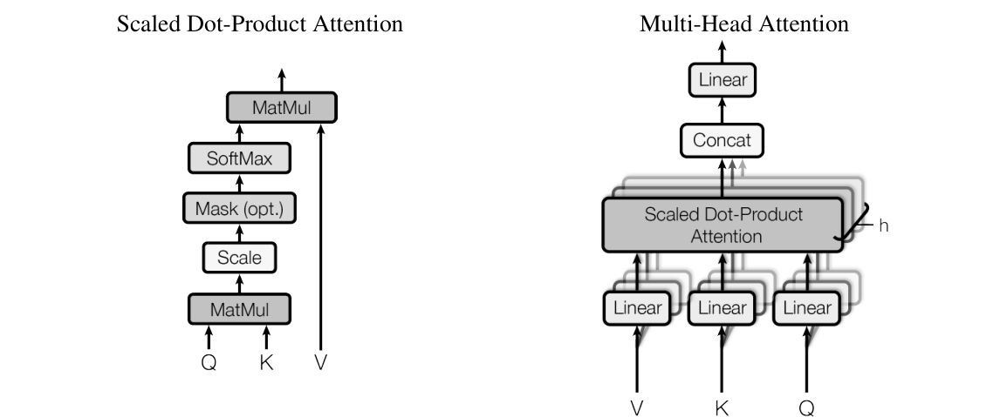
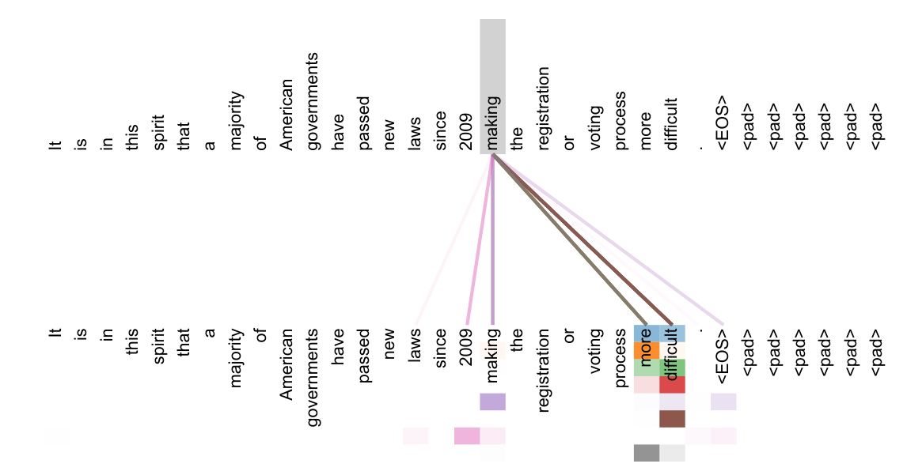
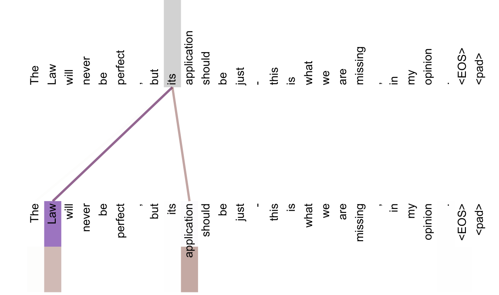

不要 RNN，只用注意力
Vaswani 等 8 位作者 2017 年的论文《Attention Is All You Need》做了一件事：把 RNN 整个拿掉，只用注意力。让句子里每个词直接「看」句子里所有的词，一层之内所有位置同时算完。结果是翻译更好、训练快得多。这个架构后来成了 GPT、BERT 以及今天几乎所有大模型的底座。
- 正文只走一条线：RNN 为什么慢 → 删掉它会丢什么 → 每个新零件补哪个洞 → 实验证明了什么。只读每节的标题和每段第一句，也能串起来。
- 公式、符号表、概念解释（点积、残差、层归一化、复杂度记号等）、训练设置、完整结果表、当时的背景，都在页尾的附录里，默认折叠，标明对应原文第几节。
- 小数字例子都验算过：为讲解设定的标「示意」，按原文公式算出的量级标「推算」。
- 001 NPLM、002 Seq2Seq、003 Bahdanau 注意力 讲过的概念（词向量、softmax、RNN、梯度消失、注意力、BLEU、束搜索）这里只提一句。
1要解决的问题
目标是机器翻译：把一句话变成另一句话。003 之后，主流做法（RNN 加注意力）还剩下几个毛病，本文要逐个解决。
003 之后，还剩什么问题
003 让解码器可以回头看原文，解决了「整句压成一个向量」的瓶颈。但它留下两个限制：
- RNN 必须一步一步算。第 t 步要等第 t−1 步算完。GPU 擅长「同时做一万件一样的事」，RNN 却要求「做完上一件才能做下一件」。
- 注意力只用在一个地方：解码器看编码器。源句内部词和词的关系，还是靠 RNN 一步步传过去。
本文的想法很直接：注意力既然已经能让「任意两个位置直接连上」，那句子内部词和词的关系，也用注意力来建，RNN 就可以整个删掉。标题说的就是这件事。
已有的补救，为什么都不彻底
- 堆更多 GPU、加大批次。只增加「同时处理几句话」，一句话内部仍是串行；长句占显存多，批次也加不上去。原文提到的 LSTM 分解技巧、混合专家（MoE）提高了效率，但「串行计算这个根本约束仍然存在」。
- 改用卷积（ConvS2S、ByteNet 等）。所有位置能同时算，并行问题解决了。但卷积核每次只看附近几个词，两个远处的词要穿过好几层才能「接上」：ConvS2S 的层数随距离线性增长，ByteNet 用扩张卷积，随距离对数增长。路径越长，远距离依赖越难学。
最直接的解法：删掉 RNN，只留注意力。但会出三个问题
注意力本质上是对一组向量做加权求和。直接拿它顶替 RNN，会立刻遇到三个洞。本文后面的三个设计，就是逐个对着它们来的：
| 删掉 RNN 之后的问题 | 为什么会出现 | 本文怎么补 |
|---|---|---|
| 丢失词序 | 加权求和把输入顺序打乱，结果不变。「狗咬人」和「人咬狗」在模型眼里一样 | 位置编码（第 5 节） |
| 「抹平」效应 | 一次加权平均只得到一个混合结果。一个词同时需要「语法主语」和「指代的先行词」两类信息，平均之后两者都变模糊。原文第 2 节说它「降低了有效分辨率」 | 多头注意力（第 4 节） |
| 解码器偷看答案 | 去掉 RNN 后，训练时所有位置同时算，前面的位置能看到后面的正确答案 | 掩码（第 6 节） |
此外只有注意力、没有逐位置的非线性加工，表达力不够，也难以叠深。所以每层还配了前馈网络、残差连接和层归一化（第 7 节）。
「自注意力」本身不是本文发明的，本文的贡献是第一个完全只靠自注意力、不用 RNN 也不用卷积的序列转换模型（此前的相关工作见附录 G）。
下面按这个顺序逐个看零件：先看整体怎么搭，再看自注意力怎么取代 RNN，然后是补上三个洞的三个设计，最后用实验检验。
2整体：骨架没变，零件换了
骨架仍是 002、003 的编码器-解码器。变的是里面的零件：从 RNN 换成了注意力。下面是原文的结构图。

- 编码器：6 层完全相同的结构。每层两个子层：① 多头自注意力；② 逐位置前馈网络。
- 解码器：也是 6 层，每层三个子层：① 带掩码的多头自注意力（只看自己和左边）；② 多头编码器-解码器注意力（查询来自解码器，键和值来自编码器最后一层的输出，这就是 003 的「回头看原文」）；③ 逐位置前馈网络。
- 输出：解码器最后一层的向量，经线性层和 softmax，得到下一个词的概率。
- 每个子层外面都包一层「残差 + 层归一化」（第 7 节讲）。
每一层做的事很固定：交流（注意力）→ 消化（前馈网络）。结构相同的层可以简单地叠很多层，层数就成了一个直接控制模型容量的旋钮（第 9 节的实验就在调它）。
这样，逐步串行的 RNN 就从骨架里拿掉了：每一层里，词和词的交流全交给注意力。各零件的符号和尺寸见附录 A。
3自注意力：每个词直接看所有词
白话：一句话里每个词互相提问
把一句话里的每个词想成会议上的一个人。003 的注意力像是「翻译员（解码器）向在座每个人（源词）提问，按相关程度听取意见」。自注意力是在座的每个人互相提问：每个人都向所有人（包括自己）问一遍「你和我有关吗？」，再按相关程度把别人的信息吸收进自己的笔记。一轮下来，每个人的笔记里都有「和自己相关的那些人」的信息。
例：「The Law will never be perfect, but its application should be just」。its 这个词本身看不出指谁。自注意力之后，its 的向量里吸收了大量 Law 的信息，模型就「知道」its 指 the Law。这是原文附录 Figure 4 画的，第 9 节会看到原图。
查询、键、值：三个角色
原文 3.2 节的定义：注意力函数把一个查询（query）和一组键-值对（key-value pairs）映射成输出；输出是值的加权和，每个值的权重由查询和对应键的「匹配度」决定。用图书馆来类比：
| 角色 | 图书馆比喻 | 在自注意力里 |
|---|---|---|
| 查询 q | 你在检索框里输入的需求 | 「我（当前词）想找什么样的信息」 |
| 键 k | 每本书的标签、索引卡 | 「我（某个词）能提供什么，用来被匹配」 |
| 值 v | 书的内容 | 「如果你选中我，我实际交给你的信息」 |
为什么分成三个角色，而不直接用词向量？因为同一个词，「我要找什么」和「我能提供什么」往往不同：its 作为查询，要找的是「一个名词先行词」；作为被匹配的对象，它能提供的是「我是个所有格代词」。所以对同一个词向量 x，用三个不同的矩阵分别算（式子见附录 A）。
三个矩阵都是训练出来的。拿自己的 q 和每个词的 k 比对打分，分数经 softmax 变成权重，再按权重把每个词的 v 加起来，就是这个词的新向量。查询、键、值来自同一个句子，所以叫「自」注意力。
打分用的是点积：两个向量对应位置相乘再相加，方向越一致越大，所以能当作「匹配度」。把所有词的查询摞成矩阵，一次矩阵乘法就能算完全部词对的打分，这正是它能并行的原因（详见附录 B）。
小数字算一遍
三个词，键的长度 d_k = 4。只看第 1 个词的查询 q = [1, 0, 1, 0]：
上面四步里有一步「÷√4」，这是本文对点积注意力的关键修正，下面单独讲它的来由。
为什么要除以 √d_k
这是本文对点积注意力的关键修正。先分清什么是观察、什么是假说：
- 作者引用的现象：d_k 小时，点积打分和加性打分效果差不多；d_k 大时，不缩放的点积注意力不如加性注意力。
- 作者的解释（原文用 We suspect，是假说）：d_k 大时点积的数值会很大，把 softmax 推进梯度极小的区域。
- 为什么点积会变大（原文脚注 4）：设 q 和 k 的每个分量独立、均值 0、方差 1。q·k 是 d_k 个这样的数相加，均值 0、方差 d_k，标准差 √d_k。d_k = 64 时标准差是 8，打分常在 ±8 的量级。除以 √d_k，方差就回到 1。
为什么大分数会让梯度变小？softmax 对大分数非常敏感。用图 3 的例子：
精确写法见附录 A（缩放点积注意力，原文 Eq. 1）。
注意力用在三个地方
同一套注意力，在模型里用在三个地方，区别只在 Q、K、V 从哪来：
| 用在哪 | Q 来自 | K、V 来自 | 作用 | 对应 003 里的什么 |
|---|---|---|---|---|
| 编码器自注意力 | 编码器上一层 | 编码器上一层（同一处） | 源句每个词看源句所有词，理解原文 | 双向 RNN 编码器 |
| 解码器自注意力（带掩码） | 解码器上一层 | 解码器上一层（同一处） | 已写出的每个词看自己和左边，理解已写的译文 | 解码器的 RNN 状态更新 |
| 编码器-解码器注意力 | 解码器上一层 | 编码器最后一层输出 | 写译文时回头看原文 | 003 的注意力本身 |
- 并行：编码器自注意力里，所有词的 Q·Kᵀ 是一次矩阵乘法，不存在「等上一个词算完」。
- 路径长度为 1：任意两个词在一层里直接相连。
- 一层一层地加深理解：第 1 层每个词吸收相关词的信息；第 2 层再做一次时，每个词看到的已经是「吸收过别人信息的别人」，相当于间接看到「别人的别人」。6 层下来，每个词的向量是「结合了整句语境的这个词」。
- 编码器里每个词能看整句（左右都看），效果上相当于 003 的双向 RNN，而且不用分前向、后向两遍；解码器自注意力只能看左边，因为生成时右边还不存在。
这一步对着毛病一和毛病二：所有词的打分在一次矩阵乘法里同时算完，不用排队；任意两个词一步直连，路径长度是 1。
4多头：请 8 个人各读一遍
一个人读一句话，会同时关注好几种关系：谁是主语、这个代词指谁、这个形容词修饰谁。如果只做一次加权平均，这几种关系的信息会混成一锅粥，这就是前面说的「抹平」。多头注意力 = 请 8 个人各读一遍，每人只关注一种关系，最后把 8 份笔记拼起来。

小数字（示意）：设 d_model = 4，2 个头，每头 2 维。对一个词，头 1 输出 [0.8, 0.1]，头 2 输出 [0.2, 0.9]，拼接得 [0.8, 0.1, 0.2, 0.9]，再乘 4×4 的 W^O 混合成 4 维输出。如果只有单头，「主语信息」和「指代信息」会在同一次 softmax 里争夺权重，最后得到一个两边都不清楚的平均值。
为什么有效，作者确定的和推测的要分开看：
- 原文的说法：多头让模型能「同时关注来自不同表示子空间、不同位置的信息」，单头时平均会抑制这一点。
- 实验证据（第 9 节的拆零件实验，图 11）：单头比最好设置差 0.9 BLEU；但头太多（32 个、每头 16 维）也变差。
- 可视化证据（第 9 节末尾的原图）：不同的头似乎学到了不同的分工。原文措辞是 apparently、seems related to，属于观察和推测，不是严格证明。
这一步对着「抹平」那个毛病：每个头只管一种关系，信息不再混成一锅。精确写法见附录 A（多头注意力，原文 3.2.2 节）。
5位置编码：把词序补回来
注意力不区分词序，所以要给每个位置算一个 512 维的「位置向量」，直接加到该位置的词向量上（是相加，不是拼接），再送进编码器或解码器。因为相加，位置向量必须和词向量同样是 512 维。
算法用的是正弦和余弦波，公式见附录 A。
直觉是钟表：秒针转得快，分针慢，时针更慢。只看秒针分不清 1 点和 2 点，三根针合起来就能唯一确定时间。512 维的位置编码就是 256 对转速不同的「指针」：前面几对变化很快，能区分相邻位置；后面几对变化很慢，能区分相隔很远的位置。
这一步对着「丢失词序」那个毛病：每个位置有了自己的编号，注意力就能分清谁在前谁在后。为什么选正弦余弦、它和学出来的位置向量比怎么样，见附录 C。
6掩码：训练时不偷看后文
训练时手里有完整的正确译文，所以解码器所有位置可以同时算。可这样位置 3 在算的时候，能「看到」位置 4、5 的正确答案，等于考试偷看，模型学不到真本事，推理时后文还不存在就会崩。所以要给解码器加一个防偷看的办法，叫掩码。
做法：在 softmax 之前，把打分矩阵里所有「看右边」的位置设成 −∞。softmax 之后，e−∞ = 0，权重就是 0。
这一步对着「解码器偷看答案」那个毛病。解码器的输入整体右移一位，加上掩码，保证预测第 i 个词时只用到第 i 个词之前的已知输出（自回归、teacher forcing 的解释见附录 B）。
7叠稳：前馈网络、残差、层归一化
每个子层（多头注意力或前馈网络）外面，都套同一个包装：先把输入加回输出（残差连接），再做层归一化（式子见附录 A）。原文 5.4 节还说，Dropout 加在子层输出上、相加之前。包装里有两个新零件：
- 残差连接：子层的输出不替换输入，而是加回输入上。梯度可以沿着这条直通路径原样流回前面的层，网络叠得深也训练得动。要能相加，所有子层和嵌入层的输出都是 d_model = 512 维。
- 层归一化：对一个词的向量，减去均值、除以标准差，再乘一个可学的缩放 γ、加一个可学的偏移 β。不管上一层输出的数值多大，进入下一层前都被拉回稳定的范围。本文先做残差相加，再归一化。
两者的动机和直觉比喻见附录 B。
前馈网络：给每个位置一次单独加工
注意力的输出，本质上是「别人的 v 的加权平均」。它负责收集信息，但加权平均本身是线性的，加工能力有限。所以每层再放一个前馈网络，对每个词单独、用同一套参数各算一次，词和词之间在这一步不交流（原文说也可以看成「卷积核大小为 1 的两层卷积」）。
这一步对着「表达力不够、叠不深」那个毛病：注意力收集信息，前馈网络加工，残差和层归一化让这一摞层稳稳地叠到 6 层。精确写法见附录 A（逐位置前馈网络，原文 Eq. 2）。
8回头对账：为什么是自注意力
零件搭完了，回头对账：为什么选自注意力，而不是 RNN 或卷积？原文第 4 节用三个标准，比较这三种「层」：
| 层类型 | 每层计算量 | 最少串行步数 | 任意两位置最长路径 |
|---|---|---|---|
| 自注意力 | O(n² · d) | O(1) | O(1) |
| RNN | O(n · d²) | O(n) | O(n) |
| 卷积（核宽 k） | O(k · n · d²) | O(1) | O(logk n) |
| 受限自注意力（只看邻近 r 个） | O(r · n · d) | O(1) | O(n/r) |
n 是句长，d 是向量维度。出自原文 Table 1。O(n) 读作「n 的量级」，只看句子翻倍时代价怎么增长，不看具体常数（详见附录 B）。
怎么读这张表
- 最少串行步数（并行程度）：自注意力和卷积是 O(1)，RNN 是 O(n)。这是 RNN 训练慢的根源。
- 最长路径（远距离依赖好不好学）：自注意力 O(1) 最短；卷积要叠 O(logk n) 层（扩张卷积）或 O(n/k) 层（普通卷积）；RNN 最长。路径越短，前向信号和反向梯度走的路越短，远距离依赖越好学。
- 每层计算量：自注意力是 n²·d，RNN 是 n·d²，哪个大取决于 n 和 d 谁大。当句长 n 小于维度 d 时，自注意力更省。本文 d = 512，原文说翻译中常用的子词句子表示「多数情况下」满足 n < d。
自注意力的软肋，也在这张表里
计算量随句长平方增长。句长 30 时没问题，句长上万（长文档、图像、音频）时，n² 就非常大。作者提出的应对是受限自注意力：每个位置只看附近 r 个位置，计算量降为 r·n·d，代价是最长路径变成 O(n/r)。原文说「计划在未来工作中进一步研究」，本文没有实验。
另外，生成时仍是一个词一个词地出，这一点和 RNN 一样没变：训练能并行，推理不能。
原文还指出一个附带的好处：可解释性。注意力权重可以直接画出来，看模型在关注什么，就是第 9 节末尾的那几张图。
对账的结果对上了前两个毛病：最少串行步数 O(1)，对着「必须排队」；最长路径 O(1)，对着「远距离连不上」。和卷积的进一步比较见附录 D。
9证据：它真的更好吗
删掉 RNN、只用注意力，到底行不行？先看总成绩。
原文第 1 节预告的结果：英德翻译 28.4 BLEU，比此前所有模型（包括集成）高 2 BLEU 以上；英法 41.8 BLEU，单模型最佳；训练成本只是对手的几分之一到几十分之一。下面逐条看。
结论一：更好，也更便宜
- 英德，big 的 28.4 比此前最好的 ConvS2S 集成（26.36）高 2.04 BLEU。「集成」是把多个模型的预测合起来，通常比单模型高不少，Transformer 用单模型超过了别人的集成。
- base（27.3）也超过了所有此前的模型和集成，成本却只是对手的几十分之一。「更好」和「更便宜」同时成立，这是本文最有说服力的地方：如果只是更好但贵得多，很难说是架构的功劳。
- 英法，big 的 41.8 是单模型最佳，略高于 ConvS2S 集成（41.29）。训练成本约为此前最佳单模型 MoE 的 1/5。
- 英法 base 只有 38.1，低于多数对手。英法数据量（3600 万句）是英德的 8 倍，小模型可能容量不够。原文没有专门讨论，这是我的推测。
训练成本是估出来的（原文脚注 5）：训练时间 × GPU 数 × 每块 GPU 的持续单精度算力（P100 取 9.5 TFLOPS）。比如 big：3.5 天 × 8 块 × 9.5 TFLOPS ≈ 2.3×1019。只能看量级。
结论二：训练快得多
原文第 1 节和 6.1 节：base 模型在 8 块 P100 上训练 12 小时，就超过了此前所有已发表的模型。这个数字的意义在于研究迭代的速度：一个想法当天就能验证。「比 RNN 时代快一个数量级」是我对 Table 2 训练成本的概括。
结论三：每个零件都有用（拆零件实验）
作者以 base 为基准，每次只改一个地方，看 BLEU 和困惑度怎么变（原文 Table 3，英德开发集）。base 的成绩是困惑度 4.92、BLEU 25.8。
- 多头有用（上图）。
- 去掉 dropout，BLEU 掉 1.2，困惑度明显变差（P_drop = 0：困惑度 5.77，BLEU 24.6）：dropout 对防过拟合很重要。
- 训练指标和任务指标不完全一致（上图右）。以下是我的推测：不太笃定的模型可能泛化更好，束搜索时也保留了更多候选。
- 用学出来的位置向量代替 sin/cos：困惑度 4.92，BLEU 25.7，几乎和 base 一样。说明「给模型位置信息」本身是关键，具体用哪种编码没那么重要。
- 模型越大越好：原文的结论只有一句「如预期」。整体趋势是层数、宽度、前馈维度增加，困惑度基本都下降（big：困惑度 4.33，BLEU 26.4，是表里最好的）。「越大越好」这个朴素观察，后来被系统研究成了缩放定律（第 009 篇）。
- 键的维度 d_k 缩小会变差（d_k = 16：BLEU 25.1；32：25.4）。作者的推论是「判断匹配度并不容易」，比点积更复杂的打分函数也许有益，这是作者的推测。
结论四：不调参，换个任务也很强
为测泛化能力，作者拿 4 层的 Transformer 去做英语成分句法分析：给句子画出语法结构树，输出写成一串括号序列。难点是输出必须满足严格的结构约束，而且比输入长得多；此前 RNN 序列到序列模型在小数据上一直做不到最好。
- 只用约 4 万句的 WSJ 训练集：Transformer 得 91.3（F1），远超 RNN 序列到序列模型（88.3），也超过专门设计的 BerkeleyParser（90.4），只比 RNNG（91.7）低一点。
- 半监督（加入约 1700 万句自动标注数据）：92.7，超过同类方法。
- 调参很少：只在开发集上调了 dropout、学习率和束宽，其余照搬英德翻译 base 的参数。这说明它是一个通用的序列建模架构，不是专为翻译调出来的。
看看它学到了什么：原文附录的注意力可视化
下面是原文附录 Figure 3 和 Figure 4，来自编码器第 5 层（共 6 层）的自注意力。注意这是作者挑选出来的例子，措辞是 apparently、seems，属于定性观察。


原文 Figure 5 的第三个例子（两个头表现出和句子结构相关的不同模式，「显然学会了做不同的事」），这里不放。
作者的结论
原文的结论可以浓缩成三句：
- Transformer 是第一个完全基于注意力的序列转换模型，用多头自注意力代替了编码器-解码器里最常见的循环层。
- 翻译上，它训练得比循环或卷积结构快得多，英德、英法都达到了当时的最好水平。
- 作者对注意力模型的未来很兴奋，计划把它扩展到文本以外的模态，也想让生成不那么串行。代码随论文开源，作者还提到后来改用 tensor2tensor 代码库重写了实现，「大大改进了结果、大大加速了研究」。
每个结论对应的完整数字表，见附录 F。
10局限和后来
作者承认或提到的：自注意力计算量随句长平方增长，长序列需要受限或局部注意力，留作未来工作；生成仍是串行的；平均会降低分辨率，需要多头抵消；点积打分可能不够强。
我补充的：
- 实验只在翻译和句法分析上做，都是「输入一段、输出一段」的有监督任务。它能不能做纯语言模型、能不能大规模预训练，本文没有验证（第 006、008 篇）。
- 位置编码「能外推到更长句子」只是期望，没有实验。后来的经验表明，原始的正弦位置编码外推能力有限（待核实具体程度），这也是后来出现多种新位置编码的原因。
- 消融实验（Table 3）原文没有报告多次运行的波动范围。像 N = 8 的 BLEU 比 N = 6 还低这类结果，可能落在随机波动之内。
- 没有和「同等算力下的最强 RNN」做严格对照。训练成本是按「时间 × GPU 数 × 估计算力」估出来的，只能看量级。
后来的事：这个架构成了 GPT、BERT 以及今天几乎所有大模型的底座，零件也被一路改进。展开见附录 H，和前后篇的衔接见附录 I。
附录 · 想深入再看
下面每一块默认折叠，点开看。标题里写了对应原文的第几节。
A · 公式与符号表（原文 3.1、3.2、3.3、3.5 节，Eq. 1–2）
查询、键、值（原文 3.2 节）
缩放点积注意力（原文 3.2.1 节，对应第 3 节）
上面四步，原文写成一个式子：
| 符号 | 白话 | 本文尺寸（单个头） |
|---|---|---|
Q | n 个查询摞成的矩阵，每行是一个词的 q | n × 64 |
K、V | n 个键、n 个值摞成的矩阵 | n × 64 |
Q·KT | 所有「查询 · 键」的点积，第 i 行第 j 列 = 词 i 对词 j 的匹配分（图 3 的 ①） | n × n |
√dk | 缩放因子（图 3 的 ②）。d_k = 64 时等于 8 | 一个数 |
softmax | 对每一行单独做，每行变成和为 1 的权重（图 3 的 ③） | n × n |
· V | 每个词按自己那行的权重，把所有词的 v 加权求和（图 3 的 ④） | n × 64 |
和 003 的三个式子对照：权重和加权求和两步一样（softmax、按权重加），不同在打分。003 用一个小神经网络 vₐᵀ tanh(Wₐ sᵢ₋₁ + Uₐ hⱼ)，每对 (i, j) 都要过一遍；004 只做一次点积 q·k。两者理论复杂度差不多，但点积可以直接用高度优化的矩阵乘法，快得多，也省内存。
多头注意力（原文 3.2.2 节，对应第 4 节）
原文公式：
| 符号 | 白话 | 对应图 5 里的 |
|---|---|---|
WiQ、WiK、WiV | 第 i 个头专属的三个投影矩阵，每个 512×64，训练得到 | 第一排向下的 8 组箭头 |
headi | 第 i 个头做完一次缩放点积注意力的结果，64 维 | 8 个蓝框 |
Concat | 把 8 个 64 维向量首尾拼成 512 维 | 灰色长条 |
WO | 512×512 的矩阵，让 8 个头的信息互相混合 | 最下面的蓝条 |
位置编码（原文 3.5 节，对应第 5 节）
用的是正弦和余弦：
| 符号 | 白话 |
|---|---|
pos | 第几个位置（0, 1, 2, …） |
i | 第几对维度。偶数维用 sin，奇数维用 cos，每一对共用一个频率 |
100002i / d_model | i 越大，分母越大，波越慢。原文说波长从 2π 到 10000·2π 成等比数列 |
子层的包装（原文 3.1 节，对应第 7 节）
逐位置前馈网络（原文 3.3 节，对应第 7 节）
| 符号 | 白话 |
|---|---|
x | 一个词的 512 维向量 |
W1、b1 | 把 512 维放大到 2048 维（d_ff），中间放大 4 倍，给加工留出空间 |
max(0, ·) | ReLU：负数变 0，正数不变。和 001 的 tanh 一样是非线性，计算更简单，正区间梯度恒为 1 |
W2、b2 | 再压回 512 维 |
B · 几个概念：点积、掩码、残差、层归一化、复杂度记号、前馈与嵌入的补充
点积与矩阵乘法：为什么「能并行」这么重要
点积：两个等长向量对应位置相乘再相加。q = [1, 0, 1, 0]，k = [1, 1, 0, 0]，q·k = 1×1 + 0×1 + 1×0 + 0×0 = 1。两个向量方向越一致，点积越大，所以点积可以当作「匹配度」。
矩阵乘法 = 一次做很多个点积。把 n 个词的查询摞成矩阵 Q（n 行），n 个键摞成矩阵 K，那么 Q·Kᵀ 是一个 n×n 的矩阵，第 i 行第 j 列就是「第 i 个词的查询 · 第 j 个词的键」。一次矩阵乘法，算完所有词对的打分。
GPU 里有几千个计算核心，矩阵乘法的每个元素可以由不同的核心同时算，而且这类运算有高度优化的库。RNN 的 hₜ 依赖 hₜ₋₁，核心只能排队。原文说点积注意力「在实践中快得多、也更省空间」，指的就是这个。
自回归、teacher forcing 与掩码
自回归：生成时每一步把「已经生成的词」作为输入，再预测下一个词（002、003 的解码器都这样）。
训练时我们手里有完整的正确译文，所以解码器每个位置的输入，直接用「正确答案的前文」，不用模型自己生成的词（这种做法通常叫 teacher forcing，原文没用这个术语）。RNN 即使答案全知，也得按位置一步步更新状态；Transformer 没有状态要传递，所有位置可以同时算。
但这样会出问题：位置 3 在算的时候，能「看到」位置 4、5 的正确答案，等于考试偷看答案，模型学不到真本事，推理时（后文还不存在）就会崩。掩码就是防偷看的。另外，解码器的输入整体右移一位（第 i 个位置的输入是第 i−1 个目标词），配合掩码，保证预测第 i 个词时只用到第 i 个词之前的已知输出。
残差连接：给每一层留一条「直通车道」
问题：网络叠得越深越难训练。梯度要穿过很多层往回传，容易越传越弱；而且每层都要从头学出完整的输出，难度大。
做法（He 等 2016，原文引用）：子层的输出不替换输入，而是加回到输入上：输出 = x + Sublayer(x)。直觉：改文章时不重写全文，而是在原稿上批注。子层只需学「在 x 基础上改多少」，什么都不用改时输出 0 就行。
为什么帮助训练：加法的导数是 1，反向传播时梯度可以沿着 x 这条直通路径原样流回前面的层。这和 002 里 LSTM「传送带上主要做加法」是同一个道理。一个约束：要能相加，输入和输出必须一样长，所以原文规定所有子层和嵌入层的输出都是 d_model = 512 维。
层归一化：每层输出先「统一量纲」
问题：层层叠加后，向量里的数值可能越来越大或越来越偏，下一层很难适应。
做法（Ba 等 2016，原文引用）：对一个词的向量，算出它所有维度的均值和标准差，减均值、除以标准差，再乘一个可学的缩放 γ、加一个可学的偏移 β。不管上一层输出的数值多大，进入下一层前都被拉回到稳定的范围。
本文先做残差相加，再归一化。这种放法后来叫 Post-LN；后来的模型大多改成先归一化再进子层（Pre-LN），见附录 H。
复杂度记号 O(·)
O(n) 读作「n 的量级」，只关心规模翻倍时代价怎么增长，不关心具体常数。O(1)：和 n 无关，句子多长都一样。O(n)：句子长一倍，代价长一倍。O(n²)：句子长一倍，代价变成四倍。O(log n)：增长很慢，n 从 8 到 64，log₂n 只从 3 到 6。
前馈网络与嵌入层的补充
我补充的一个常用的比喻：注意力 = 开会交流，前馈网络 = 会后每个人回自己工位消化。这是我的总结，原文没有这样说。每层的前馈网络参数不同，同一层内所有位置共用一套。
嵌入层的两个细节（原文 3.4 节）
- 三处共用一个矩阵：源语嵌入、目标语嵌入、输出前的线性层共用同一个权重矩阵（原文引用 Press 和 Wolf）。英德能这么做，是因为用了共享的 BPE 词表。直觉上，「词 → 向量」和「向量 → 词」本来就是互逆的两件事。
- 嵌入乘以 √d_model（≈ 22.6）：原文只说了做法，没有解释原因。一种常见的理解是，让词向量的数值不被加上去的位置编码（取值在 −1 到 1 之间）淹没。这是我的推测，待核实。
C · 位置编码：为什么选 sin/cos（原文 3.5 节）
为什么选 sin/cos（原文给的理由，作者用的词是 hypothesized，是假设）：对任意固定的距离 k，PE(pos+k) 都能写成 PE(pos) 的线性函数。作者假设这能让模型容易学会「按相对位置关注」（比如「看我左边第 2 个词」）。原因是三角公式：
也就是 [sin(p+k), cos(p+k)] = 一个只和 k 有关的 2×2 旋转矩阵 × [sin p, cos p]。「往后挪 k 个位置」，就是「把每对指针各转一个固定角度」，和当前在哪无关。
和「学出来的位置向量」比：作者也试了像词向量一样、每个位置学一个向量的做法，结果几乎一样（开发集 BLEU 25.7 对 25.8）。选 sin/cos 的理由是「可能」让模型外推到比训练时更长的句子，因为学出来的位置向量只覆盖训练见过的位置。这是作者的期望，原文没有做实验验证。
我补充的相加为什么不会毁掉词义？512 维空间非常大，词义信号和位置信号可以大致落在不同方向上，相加后仍能被后面的线性投影（W^Q、W^K）近似分开。这是我的直觉解释，原文没有讨论。
D · 和卷积的进一步比较（原文第 4 节）
直白的结论：卷积要么连不上远处，要么得叠很多层。一个核宽 k < n 的卷积层不能连接所有位置对，要叠 O(n/k) 层（普通卷积）或 O(logk n) 层（扩张卷积）。可分离卷积能把复杂度降到 O(k·n·d + n·d²)，但即使 k = n，它的复杂度也正好等于「一层自注意力 + 一层逐位置前馈网络」，也就是本文的组合。所以没有理由选卷积。
E · 训练设置、优化器与推理（原文第 5 节、6.1 节，Table 3 上半）
训练有三个要点：
- 一台机器，8 块 NVIDIA P100。base 模型每步约 0.4 秒，10 万步共 12 小时；big 模型每步约 1.0 秒，30 万步共 3.5 天。
- 用的优化器是 Adam，学习率先线性增大到第 4000 步，再慢慢降下来（预热）。
- 两个防过拟合、让结果更好的技巧：dropout 和标签平滑。
对比一下：003 里单个模型训练约 5 天（单 GPU，规模和数据也不同，只做量级参考）。
两个尺寸的模型（原文 Table 3）
| 层数 N | d_model | d_ff | 头数 h | d_k = d_v | P_drop | 训练步数 | 参数量 | |
|---|---|---|---|---|---|---|---|---|
| base | 6 | 512 | 2048 | 8 | 64 | 0.1 | 10 万 | 6500 万 |
| big | 6 | 1024 | 4096 | 16 | 64 | 0.3（英法用 0.1） | 30 万 | 2.13 亿 |
base 的参数从哪来（我按原文配置估算，原文只给了总数）：共享嵌入矩阵约 37000 × 512 ≈ 1890 万；每层编码器约 315 万（多头注意力 4 个 512×512 矩阵约 105 万，前馈网络约 210 万），6 层约 1890 万；每层解码器约 420 万，6 层约 2520 万。合计约 6300 万，和原文的 6500 万接近。偏置和层归一化参数合计只有约 10 万，补不上剩下约 200 万（约 3%）的差距。差距可能来自实际词表大小或实现细节，原文没有交代，待核实。可以看出：前馈网络占了每层参数的大头，注意力本身参数并不多。
数据与批次（原文 5.1 节）
- 英德：WMT 2014，约 450 万句对，BPE 共享词表约 37000。
- 英法：WMT 2014，3600 万句，word-piece 词表 32000。
- 按句长相近的句子组批，每批约 25000 个源语 token + 25000 个目标语 token。
子词切分（BPE / word-piece）：把词切成更小的常见片段，例如 unhappiness → un + happi + ness。词表大小可控，又基本没有 003 那样的生词问题。BPE 的切分算法会在第 007 篇展开。
优化器与学习率（原文 5.3 节）
Adam，β₁ = 0.9，β₂ = 0.98，ε = 10−9（Adam 本身在第 005 篇讲）。学习率随步数变化：
前 4000 步，第二项更小，学习率随 step 线性上升；之后第一项更小，学习率按 1/√step 缓慢下降。为什么开头要小：训练刚开始时参数是随机的，梯度方向很不可靠，一开始就迈大步容易把模型「踢飞」。代入几个点（d_model−0.5 ≈ 0.0442）：
| 步数 | 学习率 |
|---|---|
| 1000 | 约 1.75 × 10−4 |
| 4000（峰值） | 约 7.0 × 10−4 |
| 16000 | 约 3.5 × 10−4 |
正则化（原文 5.4 节）
- Dropout：训练时随机把一部分神经元的输出置 0（P_drop = 0.1，即 10%）。直觉：团队里每次随机有人请假，迫使大家都得会，从而减少过拟合（在训练集上背答案、换了数据就不行）。推理时不丢弃。每个子层的输出在加回残差前做 dropout，嵌入与位置编码之和也做。
- 标签平滑（ε_ls = 0.1）：正常训练时正确词的目标概率是 1、其余是 0。标签平滑把目标「软化」，正确词约 0.9，剩下 0.1 分给其他词（具体分法有几种实现，原文未写明）。原文说它让困惑度变差，但提高了准确率和 BLEU，没有解释 BLEU 为什么变好。
推理（原文 6.1 节）
- 检查点平均：base 取最后 5 个检查点（每 10 分钟存一个）的参数取平均当最终模型，big 取最后 20 个。直觉：训练末期参数在最优点附近来回抖动，平均更接近中心。
- 束搜索，束宽 4；长度惩罚 α = 0.6（抵消束搜索偏爱短句的倾向）；最大输出长度 = 输入长度 + 50。这些超参数是在开发集上试出来的。
F · 完整结果表和读数字的注意事项（原文第 6 节，Table 2、3、4）
Table 2 完整版（英德 / 英法，newstest2014）
| 模型 | 英德 BLEU | 英法 BLEU | 成本 英德 | 成本 英法 |
|---|---|---|---|---|
| ByteNet | 23.75 | |||
| Deep-Att + PosUnk | 39.2 | 1.0×1020 | ||
| GNMT + RL | 24.6 | 39.92 | 2.3×1019 | 1.4×1020 |
| ConvS2S | 25.16 | 40.46 | 9.6×1018 | 1.5×1020 |
| MoE | 26.03 | 40.56 | 2.0×1019 | 1.2×1020 |
| Deep-Att + PosUnk 集成 | 40.4 | 8.0×1020 | ||
| GNMT + RL 集成 | 26.30 | 41.16 | 1.8×1020 | 1.1×1021 |
| ConvS2S 集成 | 26.36 | 41.29 | 7.7×1019 | 1.2×1021 |
| Transformer (base) | 27.3 | 38.1 | 3.3×1018 | |
| Transformer (big) | 28.4 | 41.8 | 2.3×1019 |
Transformer 的训练成本在原文表格里跨英德、英法两列，即两种语言对的估算相同（big 都是 8 块 P100 训练 3.5 天）。
一处原文前后不一致：摘要和 Table 2 写英法 big 是 41.8，但 6.1 节正文写的是 41.0。41.8 是 arXiv 后续版本更新后的数字（早期版本是 41.0），正文没有同步改，以表和摘要为准。版本更新的细节待核实。
Table 3 的其他几组（英德开发集）
| 改动 | 困惑度 | BLEU | 参数量 |
|---|---|---|---|
| base | 4.92 | 25.8 | 6500 万 |
| d_k = 16 | 5.16 | 25.1 | 5800 万 |
| d_k = 32 | 5.01 | 25.4 | 6000 万 |
| N = 2 层 | 6.11 | 23.7 | 3600 万 |
| N = 4 层 | 5.19 | 25.3 | 5000 万 |
| N = 8 层 | 4.88 | 25.5 | 8000 万 |
| d_model = 256（d_k = d_v 改为 32） | 5.75 | 24.5 | 2800 万 |
| d_model = 1024（d_k = d_v 改为 128） | 4.66 | 26.0 | 1.68 亿 |
| d_ff = 1024 | 5.12 | 25.4 | 5300 万 |
| d_ff = 4096 | 4.75 | 26.2 | 9000 万 |
| P_drop = 0 | 5.77 | 24.6 | |
| P_drop = 0.2 | 4.95 | 25.5 | |
| ε_ls = 0 | 4.67 | 25.3 | |
| ε_ls = 0.2 | 5.47 | 25.7 | |
| 学出来的位置向量 | 4.92 | 25.7 | |
| big | 4.33 | 26.4 | 2.13 亿 |
N = 8 的 BLEU（25.5）反而略低于 base（25.8），但困惑度更好，说明 BLEU 有一定波动，不能只看单个数字。
Table 4：句法分析的对照（WSJ 23 F1）
| 模型 | 训练方式 | F1 |
|---|---|---|
| Vinyals & Kaiser 等 2014（RNN 序列到序列） | 仅 WSJ | 88.3 |
| Petrov 等 2006（BerkeleyParser） | 仅 WSJ | 90.4 |
| Dyer 等 2016（RNNG） | 仅 WSJ | 91.7 |
| Transformer（4 层） | 仅 WSJ | 91.3 |
| Vinyals & Kaiser 等 2014 | 半监督 | 92.1 |
| Transformer（4 层） | 半监督 | 92.7 |
| Luong 等 2015 | 多任务 | 93.0 |
| Dyer 等 2016（RNNG） | 生成式 | 93.3 |
设置：4 层，d_model = 1024；推理时最大输出长度为输入 + 300，束宽 21，α = 0.3。
G · 相关工作与当时的背景（原文第 1、2 节；2017）
原文第 2 节列举了此前的阅读理解、摘要等自注意力工作，但它们都把自注意力和 RNN 一起用。
- 主流架构：RNN（LSTM/GRU）+ 注意力。Google 2016 年上线的 GNMT 是一个很深的 LSTM 编码器-解码器加注意力，代表当时工业界的最强水平。
- 「去 RNN 化」的竞争：Facebook AI 的 ConvS2S（2017 年 5 月）用卷积做翻译，比 GNMT 更快更好；DeepMind 的 ByteNet 用扩张卷积。大家都意识到 RNN 的串行是瓶颈，分歧在于「用什么替代」。Transformer 在 ConvS2S 发布约一个月后挂上 arXiv（2017 年 6 月）。ConvS2S 为了补回词序，也用了学出来的位置向量，这一点在原文 3.5 节被引用过。
- 算力：NVIDIA P100（2016 年发布）是主力 GPU，单卡约 9.5 TFLOPS 单精度。GPU 擅长矩阵乘法、不擅长串行，这正是本文设计的出发点。
- 零件都是新的：残差连接（2016）、层归一化（2016）、Adam（2015）都刚出现不久。本文的贡献很大一部分在于把这些零件用对了地方并组合起来。
H · 后来的发展（原文之外）
下面区分「可以核实的事实」和「后世评价」。
- 成了几乎所有大模型的底座（事实）。只用解码器：GPT 系列去掉编码器，只用「带掩码的自注意力 + 前馈网络」做语言模型，用大量文本预训练（第 006、007、011 篇）。今天的 ChatGPT、Claude 等大语言模型基本都属于这一路线。只用编码器：BERT 去掉解码器，只用双向自注意力做预训练（第 008 篇）。
- 走出文本（事实）：2020 年的 Vision Transformer 把图像切成小块当作 token，用 Transformer 做图像识别；语音、蛋白质结构等领域也广泛采用，兑现了原文「扩展到文本以外的模态」的计划。
- 零件被改进（事实）：层归一化的位置，大多数大模型改成了 Pre-LN（先归一化再进子层，残差直通不经过归一化），深层模型更容易训练；位置编码，正弦编码后来被学出来的位置向量、相对位置编码、RoPE、ALiBi 等取代；长序列，平方复杂度催生了大量高效注意力研究，FlashAttention 等方法不改变数学定义，而是优化显存读写；前馈网络里的 ReLU 常换成 GELU、SwiGLU，混合专家也被放进前馈网络的位置。
- 「越大越好」被系统化（事实）：拆零件实验（Table 3）里那条朴素观察，后来被系统研究成缩放定律（第 009、010 篇）。
- 后世评价：Transformer 能并行、能稳定叠深，常被认为是后来能把模型做到千亿参数的前提。它被普遍视为深度学习史上最有影响力的论文之一，被引次数极高（具体数字待核实）。一个常见的看法是：它的成功不只因为效果好，更因为和 GPU 的计算方式高度契合，让「用更多算力和数据换更好效果」这条路第一次变得可行。
我补充的RoPE 的核心思想，正是 位置编码一节（附录 C）「挪动 k 个位置等于旋转一个固定角度」的进一步发展。这是我自己的联系，具体关系待核实。
I · 前后篇衔接，和 003 的对照（原文之外）
和 003 的 Q/K/V 对应：003 里查询是解码器状态，键和值是同一个 hⱼ；这里键和值拆开了。
继承自：003 Bahdanau 注意力（注意力的核心机制：打分、softmax、加权求和，「任意位置直接相连」的思想，编码器-解码器注意力）；002 Seq2Seq（编码器-解码器骨架、逐词概率分解、自回归生成、束搜索）；001 NPLM（词向量、softmax 输出层、用神经网络参数化条件概率）。
对 003 的推进：
- 删掉 RNN，自注意力成为唯一的信息交换方式；训练时一句话内部完全并行（编码器和解码器都是）。
- 任意两个位置的路径长度从 O(n) 降到 O(1)。
- 注意力从「只用在解码器看编码器」推广到三处。
- 加性打分变成缩放点积打分（更快），再加多头（抵消平均的模糊）。
- 新增位置编码，显式补回 RNN 天然有的顺序信息。
- 003 留下的「必须串行」问题被解决；003 的生词问题由子词切分基本消除。
留下的问题：
- 本文用的 Adam 和学习率设置没有展开 → 第 005 篇 Adam
- 只在有监督翻译上训练，每个任务都要成对的标注数据 → 第 006 篇 GPT-1（只用解码器，先在大量无标注文本上预训练，再微调），第 008 篇 BERT（只用编码器做双向预训练）
- 子词切分只是拿来用 → 第 007 篇 GPT-2 的 byte-level BPE
- 「模型越大越好」只是一句观察 → 第 009 篇 Scaling Laws、第 010 篇 Chinchilla
- 平方复杂度、生成串行：本系列不专门讨论，后续篇涉及时再提